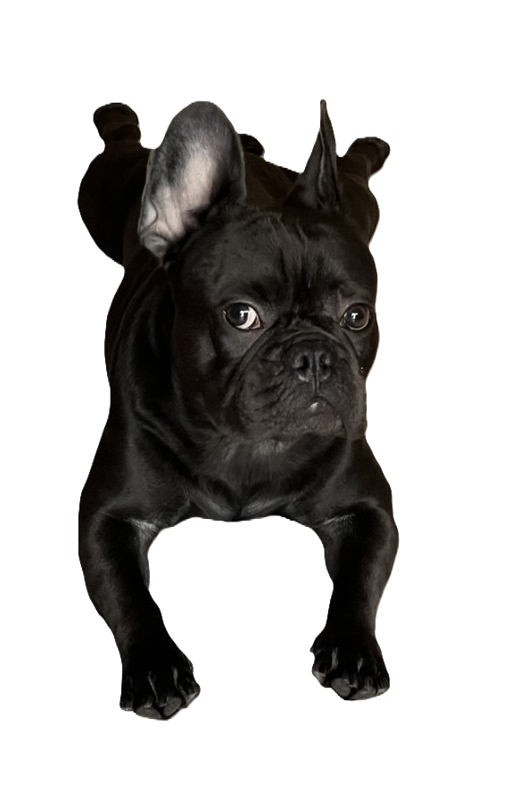

Мене звуть Арні. Я французьский бульдог та народився у січні 2023 року.
Найбільше за все я люблю бігати по квартирі та знайомитись з іншими собаками. Я дуже товариський.
Вважається, що французькі бульдоги виведені з англійських бульдогів, і служили бійцівськими собаками малого формату.
Але з допомогою британських любителів породи, не зацікавлених у собачих боях, французи поступово вийшли з ряду собак, що брали участь в бійках.
Сучасні кінологи вказують серед предків французького бульдога також зниклих в даний час іспанських бульдогів — аланів (що зазначено в стандарті породи)
Насправді французькі бульдоги виведені в Англії.
І завдяки своєму компактному формату, французи стали з'являтися першими в англійських швачок, в якості домашніх улюбленців і щуроловів.
Потім деякі швачки емігрували у Францію разом зі своїми улюбленцями, де бульдоги вже попадаються на очі французької еліти.
Таким чином, французький бульдог стає дуже популярною собакою в престижних колах. Цю собаку собі могла дозволити виключно еліта Франції.
У Франції ж і була вперше зареєстрована дана порода, де і присвоєно назву «Французький бульдог». Проте, існують і інші думки на цей рахунок
Собака-компаньйон, собака для розваги.
Веселий і рухливий, з міцною психікою, любить дітей, добре зустрічає гостей, але в разі небезпеки готовий захищати господаря та його родину.
Може бути агресивний до інших собак і кішок, але це залежить від темпераменту індивідуальної особини.
